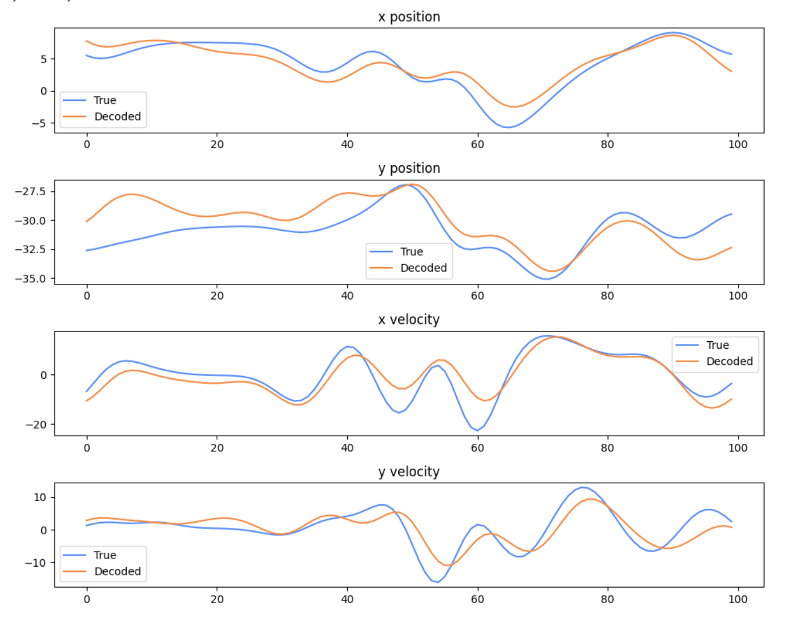
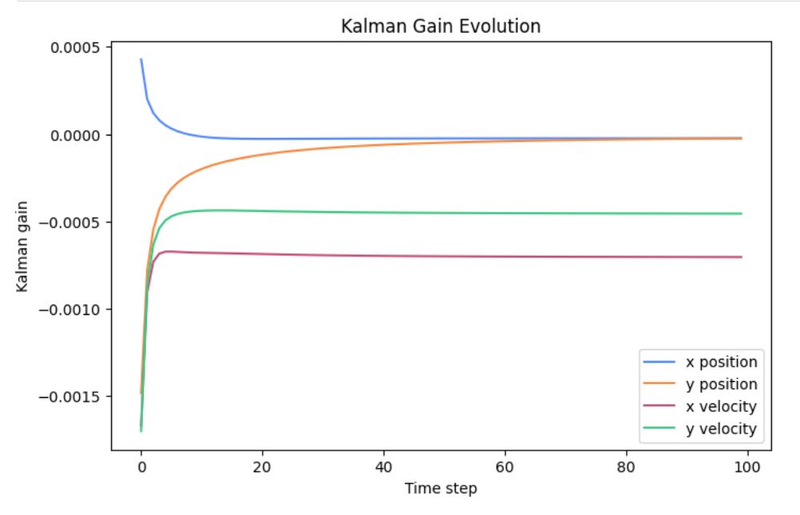

This project implements a Kalman filter-based decoder for brain-machine interfaces (BMI), translating neural firing patterns into kinematic states (position and velocity). The decoder learns the relationship between neural activity and movement from training data, then reconstructs intended movements from test neural recordings in real time.
Built with JAX for high-performance array operations and automatic differentiation, this implementation demonstrates core principles of neural decoding: state estimation, uncertainty quantification, and real-time inference.

Figure 1 — Decoding performance across 100 time steps. Solid lines show true kinematics, dashed lines show Kalman filter estimates. Position variables (top two panels) show near-perfect tracking, while velocity variables (bottom two panels) exhibit expected noisier reconstruction.The Kalman filter models the brain-movement relationship as a linear dynamical system:
All parameters are learned from training data using least squares estimation, then applied recursively to decode test data. The filter balances prior predictions with new observations through the Kalman gain, which adapts over time as uncertainty decreases.
Position variables achieved significantly higher accuracy than velocity, consistent with known neural encoding properties — position is more robustly represented in neural populations, while velocity signals are noisier and harder to reconstruct.

Figure 2 — Kalman gain evolution across the first 100 time steps. Gains stabilize within 15–20 steps as uncertainty decreases. Sign differences reflect directional tuning preferences of individual neurons.The Kalman gain stabilizes within 15–20 time steps, after which the filter reaches steady-state performance. The sign of each gain reflects directional tuning preferences of individual neurons: positive contributions from neurons that increase firing for specific movement directions, negative from those with opposite tuning.
Systematic testing of initial state (x₀) and covariance (P₀) revealed critical insights for real-world BMI deployment:
This implementation demonstrates skills directly applicable to: